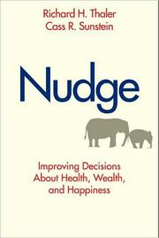
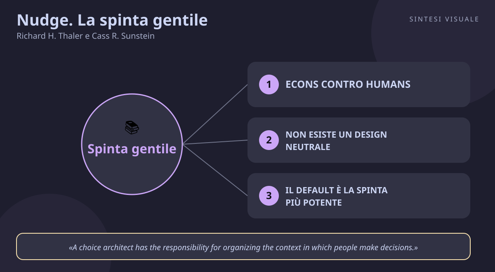

Home / Libri / Nudge. La spinta gentile

Nudge. La spinta gentile
Richard H. Thaler e Cass R. Sunstein · Persuasione e decisioni
«Nudge. La spinta gentile»
- Econs contro Humans
- Design non neutrale
- Potere del default
- Rendilo facile
🧭Introduzione
Richard Thaler è l'economista dell'Università di Chicago che ha fondato l'economia comportamentale e nel 2017 ha vinto il Premio Nobel per aver dimostrato che gli esseri umani non si comportano come i modelli economici prevedono; Cass Sunstein è il giurista di Harvard che ha lavorato alla Casa Bianca sull'analisi delle politiche pubbliche. Pubblicato l'8 aprile 2008 da Yale University Press (edizione italiana Feltrinelli, Nudge. La spinta gentile, 2014; edizione definitiva aggiornata nel 2021), il libro ha venduto oltre un milione e mezzo di copie, è stato miglior libro dell'anno per Economist e Financial Times e ha fatto entrare la parola "nudge" nei governi di mezzo mondo — dal Regno Unito agli Stati Uniti sono nate vere unità dedicate alle "spinte gentili" nelle politiche pubbliche.
Perché questo libro conta oggi: ogni giorno prendiamo decine di decisioni — cosa mangiare, quanto risparmiare, quale piano sanitario scegliere, se donare gli organi — e le sbagliamo sistematicamente, non per stupidità ma perché siamo fatti così. Chi progetta il contesto in cui scegli — un modulo, un'app, una mensa, una legge — influenza le tue decisioni anche senza volerlo: tanto vale farlo bene, in modo trasparente e a fin di bene. Per chi vende, persuade, negozia o guida persone, questo libro è la cassetta degli attrezzi scientifica.
A chi è utile: a chi vuole persuadere senza forzare (venditori, marketer, manager, genitori, insegnanti); a chi progetta prodotti, servizi o procedure e vuole più adesioni senza obblighi; a chiunque voglia capire perché rimanda sempre le decisioni importanti — e come smettere.
📘Riassunto
La scintilla centrale: gli esseri umani non sono "Econs", calcolatori razionali dei manuali di economia, ma "Humans": distratti, pigri, influenzabili, con poca forza di volontà. Poiché ogni scelta avviene dentro un contesto progettato da qualcuno, possiamo progettare quel contesto — l'architettura della scelta — in modo da spingere con gentilezza le persone verso ciò che loro stesse vorrebbero, senza vietare nulla.
La struttura logica procede in tre movimenti:
- Gli Umani e i loro errori — i due sistemi cognitivi (quello Automatico, veloce e istintivo, e quello Riflessivo, lento e accurato), e i bias che ci fanno sbagliare: ancoraggio, disponibilità, ottimismo eccessivo, avversione alla perdita, inerzia e influenza sociale.
- I principi dell'architettura della scelta — gli strumenti del bravo "architetto delle scelte": opzioni di default, aspettarsi l'errore, dare feedback chiari, mappare bene le scelte complesse, ordinare le opzioni con intelligenza e filtrare il sovraccarico.
- Le spinte in azione — applicazioni concrete a soldi (il programma Save More Tomorrow per la pensione), salute (donazione organi, alimentazione, fumo), ambiente, scuola e persino matrimonio: in ogni campo una piccola modifica del contesto batte prediche e divieti.
Il punto di svolta: l'esempio della mosca incisa negli orinatoi dell'aeroporto di Amsterdam — un minuscolo bersaglio che migliora la mira e riduce i costi di pulizia senza un solo cartello di divieto. È lì che il lettore capisce: non servono incentivi enormi o regole dure; basta rendere facile la cosa giusta e difficile quella sbagliata.
L'eredità oggi: il libro ha fondato la teoria dei nudge e la filosofia del "paternalismo libertario", ha ispirato unità governative di scienze comportamentali in tutto il mondo e ha dato a Thaler il Nobel. Dopo Kahneman (Pensieri lenti e veloci), che descrive gli errori della mente, Thaler e Sunstein insegnano a progettarci attorno: è il manuale operativo dell'economia comportamentale.
💡Concetti chiave
- Econs contro Humans: non siamo computer razionali, ma esseri distratti e prevedibilmente irrazionali — progetta di conseguenza.
- Non esiste un design neutrale: ogni contesto influenza le scelte, che tu lo voglia o no — tanto vale farlo con intenzione.
- Il default è la spinta più potente: ciò che accade se non fai nulla decide l'esito per la maggioranza delle persone.
- Paternalismo libertario: guida verso il bene senza vietare nulla — la libertà di uscire dal percorso deve restare sempre aperta.
- Parla al Sistema Automatico: la mente veloce decide prima di quella lenta — segnali semplici e visibili battono argomenti complessi.
- Rendilo facile (o difficile): se vuoi un comportamento, abbassa ogni attrito; se vuoi scoraggiarlo, alza gli ostacoli.
📖1. Econs contro Humans
- Definizione gli "Econs" sono le creature immaginarie dei modelli economici — calcolano tutto, non dimenticano, non rimandano; gli "Humans" siamo noi: perdiamo le scadenze, mangiamo il dolce che avevamo giurato di evitare, restiamo nel piano tariffario sbagliato per anni.
- Esempio sai che dovresti versare di più nel fondo pensione e ogni gennaio te lo prometti; a dicembre non hai fatto nulla, non perché sei contrario, ma per inerzia e moduli complicati.
- Come applicarlo quando vuoi convincere qualcuno (o te stesso), smetti di dare solo informazioni e ragioni: chiediti quale attrito blocca l'azione e rimuovilo — precompila, semplifica, ricorda al momento giusto.
- Errore comune credere che "se capiscono, agiranno" — l'informazione da sola quasi mai cambia i comportamenti radicati.
- Collegamento è la stessa base di Kahneman (Pensieri lenti e veloci, già trattato in questa rubrica): bias e scorciatoie mentali non sono difetti da insultare, ma materiale da costruzione.
📖2. Non esiste un design neutrale
- Definizione ogni presentazione di una scelta — l'ordine delle voci in un menu, il layout di una mensa, la schermata di un'app — spinge in una direzione; anche "non pensarci" è una scelta che produce un effetto. Chi organizza il contesto è un "architetto delle scelte", che lo voglia o no.
- Esempio in mensa, mettere la frutta all'altezza degli occhi e i dolci in fondo al banco cambia cosa la gente prende, senza vietare alcun dolce.
- Come applicarlo elenca i tre punti in cui i tuoi interlocutori scelgono (una proposta commerciale, una pagina prezzi, un modulo d'ordine) e chiediti: cosa sto suggerendo con l'ordine, i default, le evidenziazioni? Poi disegnali apposta.
- Errore comune pensare "io non influenzo nessuno, lascio libertà totale" — in realtà stai solo influenzando a caso.
- Collegamento richiama Cialdini (Le armi della persuasione, già trattato): anche il contesto fisico e sociale è uno strumento di influenza, non solo le parole.
📖3. Il default è la spinta più potente
- Definizione l'opzione di default è ciò che accade se la persona non fa nulla; per inerzia e indecisione, la maggioranza resta dov'è. Scegliere bene i default è "la madre di tutte le spinte".
- Esempio quando l'iscrizione al fondo pensione aziendale è automatica (con possibilità di uscire), l'adesione schizza alle stelle rispetto al sistema in cui bisogna iscriversi attivamente — caso reale del programma Save More Tomorrow di Thaler e Benartzi, raccontato nel libro.
- Come applicarlo nelle tue proposte, rendi l'opzione che consigli tu quella "già selezionata": abbonamento con rinnovo, piano consigliato preselezionato, appuntamento di follow-up già fissato salvo disdetta. L'uscita deve restare facilissima, altrimenti non è un nudge ma una trappola.
- Errore comune impostare default furbi ma sleali (rinnovi nascosti, caselle preselezionate a pagamento) — funzionano una volta e distruggono la fiducia per sempre.
- Collegamento Sunstein lo applica alle politiche pubbliche (donazione organi con scelta obbligatoria al rinnovo della patente); in azienda è lo stesso principio dei processi "a opt-out".
📖4. Paternalismo libertario
- Definizione "paternalismo" perché si cerca di orientare le persone verso ciò che loro stesse giudicherebbero un bene (salute, risparmio, sicurezza); "libertario" perché nessuna opzione viene vietata e uscire dal percorso resta facile ed economico.
- Esempio il navigatore che ti propone il percorso più veloce ma ti lascia libero di prendere la strada panoramica: ti guida, non ti ammanetta al volante.
- Come applicarlo prima di lanciare una regola ("da oggi è vietato..."), prova la versione gentile: default intelligente + promemoria + feedback. Tieni regole dure solo per i casi in cui la posta è altissima.
- Errore comune usare il paternalismo come scusa per manipolare verso i propri interessi invece che verso quelli della persona — il test è: lo sceglierebbe anche riflettendoci con calma?
- Collegamento dialoga con Mill e la libertà individuale da un lato, e con la "spinta gentile" del marketing etico dall'altro: persuasione sì, coercizione mascherata no.
📖5. Parla al Sistema Automatico
- Definizione la mente ha due modalità — il Sistema Automatico (veloce, istintivo, guidato da abitudini e segnali) e quello Riflessivo (lento, deliberato, faticoso). La maggior parte delle decisioni quotidiane le prende il primo, mentre il secondo dorme.
- Esempio la mosca incisa nell'orinatoio funziona perché dà al Sistema Automatico un bersaglio immediato e divertente: niente ragionamenti sull'igiene, solo mira.
- Come applicarlo se vuoi cambiare un comportamento, non scrivere un manuale: metti un segnale visibile nel momento esatto della scelta — un promemoria sul cruscotto, un esempio precompilato nel modulo, un feedback istantaneo ("con questa scelta risparmi 40 euro al mese").
- Errore comune presentare tabelle comparative da dieci righe a persone di fretta e lamentarsi che "non leggono" — il Sistema Riflessivo ha batteria limitata, usalo con parsimonia.
- Collegamento è il ponte diretto con Kahneman (Sistema 1/Sistema 2) e con il design comportamentale delle app moderne (notifiche, streak, progress bar).
📖6. Rendilo facile (o difficile)
- Definizione prima regola operativa del libro: se vuoi incoraggiare un comportamento, rendilo facile; se vuoi scoraggiarlo, rendilo difficile. Piccoli attriti — un modulo in più, un clic in più, una distanza in più — spostano masse di persone.
- Esempio l'apparecchio "ambient orb" raccontato nel libro — una lucina in casa che diventa più luminosa quanto più elettricità consumi — tagliò le bollette del 40%: feedback immediato, zero prediche.
- Come applicarlo fai la "caccia all'attrito": per l'azione che desideri (iscriversi, pagare in tempo, prenotare la visita), conta i passaggi e dimezzali; per quella da frenare (disdette impulsive, acquisti a debito, sprechi), aggiungi una pausa di riflessione obbligata.
- Errore comune lavorare solo sugli incentivi economici (sconti, premi) ignorando che spesso è la fatica, non il prezzo, a bloccare le persone.
- Collegamento è il principio dietro Atomic Habits di Clear (già trattato: "rendilo ovvio, rendilo facile") e dietro ogni buona esperienza d'acquisto online.
💬Citazioni da ricordare
"A nudge, as we will use the term, is any aspect of the choice architecture that alters people's behavior in a predictable way without forbidding any options or significantly changing their economic incentives." — È la definizione fondativa del libro: se vieti o se cambi radicalmente i costi, non è più una spinta gentile ma un obbligo; conta perché fissa il confine etico di tutto il metodo.
"A choice architect has the responsibility for organizing the context in which people make decisions." — Ricorda che non puoi tirarti fuori: se organizzi un contesto (una riunione, un'offerta, una procedura), sei responsabile della direzione in cui spinge; conta perché trasforma ogni manager, venditore e genitore in un progettista consapevole.
🌍Esempi di oggi
- Il modulo che nessuno compila: in ufficio l'adesione al corso di formazione è ferma al 10% perché richiede tre firme e un portale ostico. Sposti l'iscrizione a default automatico con un clic per rinunciare: in una settimana siete all'80%. È il default che lavora, non la motivazione improvvisa.
- La spesa che cambia da sola: al supermercato metti in lista solo dopo aver mangiato e con le categorie già ordinate (verdura prima, snack per ultimi sullo scontrino mentale); a casa scopri un carrello più sano senza aver subito alcuna "dieta". Hai architettato la scelta prima che il Sistema Automatico prendesse il controllo tra gli scaffali.
- Il cliente che rimanda la firma: invece di sollecitare per telefono, invii la proposta con l'opzione consigliata già evidenziata, due righe che mostrano il costo del rinvio per settimana e un pulsante unico "accetta e parti". Il cliente firma in giornata: hai reso facile la cosa giusta e visibile il costo dell'inerzia.
🛠️Azioni pratiche
- Ridisegna un tuo default: prendi un modulo, una proposta o una routine (es. la proposta commerciale standard, l'iscrizione a un'attività, la tua agenda del lunedì) e imposta come opzione predefinita quella che consiglieresti a un amico; verifica che uscirne resti facilissimo.
- Installa un feedback visibile: scegli un comportamento da migliorare (spese, tempo sui social, consumi) e crea un segnale quotidiano impossibile da ignorare — un numero scritto sul frigo, un promemoria serale, una app che mostra il contatore in tempo reale.
- Fai una "caccia all'attrito": prendi un'azione che rimandi da settimane e rimuovi un solo ostacolo concreto entro 48 ore (precompila il modulo, prenota la visita, prepara la borsa da palestra la sera prima).
💎Da portare a casa
Non serve costringere le persone (te compreso) a fare la cosa giusta: basta progettare il contesto in modo che la cosa giusta sia la più facile.
Vuoi approfondire? Rispondi in chat con il numero del concetto (1–6) che ti interessa di più e lo espando con altri esempi e casi reali, oppure fammi una domanda su un tema: persuasione, vendite, negoziazione, decisioni, stress, emozioni, carriera.
🖼️In un colpo d’occhio

Tocca l’immagine per ingrandirla.